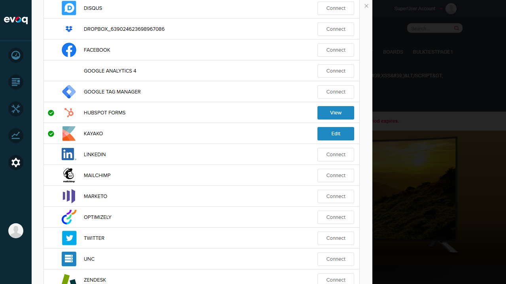
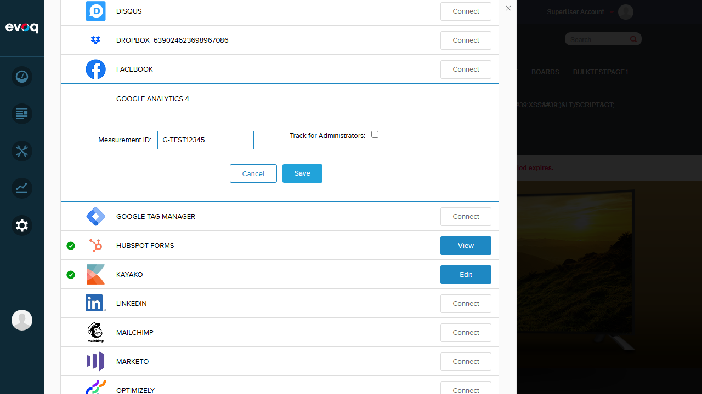
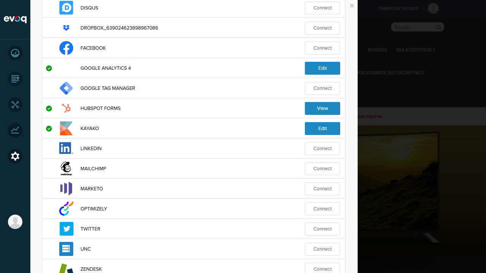
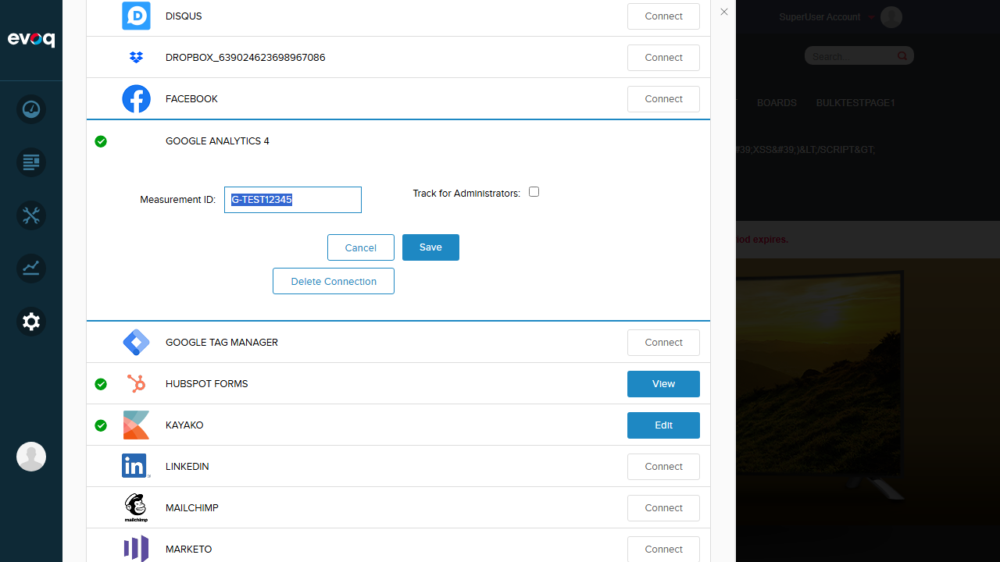

Google Analytics OAuth Authorization - Test Report
Feature: Google Analytics OAuth Authorization
Extension: Evoq.Content.GoogleAnalyticsConnector
Priority: Top
UI Location: Persona Bar > Settings > Connectors > Google Analytics
Test Date: January 6, 2026
Executive Summary
CRITICAL FINDING: The OAuth-based Google Analytics connector (ContentGoogleAnalyticsConnector) described in the code and test scenarios is NOT visible in the UI. Only "Google Analytics 4" connector is available, which uses a simple Measurement ID configuration instead of OAuth authorization flow.
6
OAuth Tests Not Applicable
Test Results Summary
| Test Scenario |
Status |
Notes |
| Delete/Disconnect existing connection |
PASS |
Successfully deleted GA4 connection with confirmation message |
| Empty Measurement ID validation |
PASS |
Error message "Tracking Code Cannot Be Empty" displayed |
| Save valid Measurement ID |
PASS |
Configuration saved successfully with success notification |
| Cancel button discards changes |
PASS |
Changes discarded, original value retained after cancel |
| OAuth Authorization Tests (Not Testable - Connector Not Visible in UI) |
| Initiate OAuth authorization with valid Google account |
N/A |
OAuth connector not present in UI |
| Complete authorization flow and verify token storage |
N/A |
OAuth connector not present in UI |
| Handle authorization failure scenarios |
N/A |
OAuth connector not present in UI |
| Test authorization with insufficient GA permissions |
N/A |
OAuth connector not present in UI |
| Verify popup window behavior for OAuth flow |
N/A |
OAuth connector not present in UI |
| Test authorization cancellation by user |
N/A |
OAuth connector not present in UI |
Detailed Test Results
Test 1: Delete/Disconnect Existing Connection PASS
Description: Test the ability to disconnect/delete an existing Google Analytics 4 connection.
Steps:
- Navigate to Persona Bar > Settings > Connectors
- Locate Google Analytics 4 connector (shows "Edit" when connected)
- Click Edit to expand the configuration panel
- Click "Delete Connection" button
- Verify success notification and connector status changes to "Connect"
Result: PASS - Connection deleted successfully. "Item successfully deleted" message appeared and connector button changed from "Edit" to "Connect".
Screenshot - Before (Edit panel with Delete Connection option):

Screenshot - After (Connection deleted):

Test 2: Empty Measurement ID Validation PASS
Description: Test that the system validates against empty Measurement ID when saving.
Steps:
- Click "Connect" on Google Analytics 4 connector
- Leave Measurement ID field empty
- Click "Save" button
- Verify validation error message appears
Result: PASS - Error message "Tracking Code Cannot Be Empty" displayed when attempting to save with empty Measurement ID.
Screenshot - Connect panel with empty field:
Test 3: Save Valid Measurement ID PASS
Description: Test saving a valid Measurement ID configuration.
Steps:
- Click "Connect" on Google Analytics 4 connector
- Enter valid Measurement ID: "G-TEST12345"
- Click "Save" button
- Verify success notification and "Delete Connection" button appears
Result: PASS - Configuration saved successfully. "Item successfully saved" message appeared and "Delete Connection" button became visible.
Screenshot - Measurement ID entered:

Screenshot - Save success:

Test 4: Cancel Button Discards Changes PASS
Description: Test that Cancel button properly discards unsaved changes.
Steps:
- With existing configuration (G-TEST12345), click Edit
- Modify Measurement ID to "G-MODIFIED999"
- Click "Cancel" button
- Click Edit again to verify original value is retained
Result: PASS - Cancel button properly closed the panel and discarded changes. When reopening, the original value "G-TEST12345" was retained (not "G-MODIFIED999").
Screenshot - Panel closed after Cancel:

Screenshot - Original value retained:

Observations
Critical: OAuth-Based Google Analytics Connector Not Visible in UI
The code files reviewed for this feature describe an OAuth-based Google Analytics connector with the following capabilities:
- OAuth Authorization Flow: Opens popup window for Google OAuth consent
- Account Selection: Dropdown to select Google Analytics account
- Web Property Selection: Dropdown to select web property
- Data Stream Selection: Dropdown to select data stream
- Token Management: Automatic token refresh and storage
- Disconnect/Deauthorize: Revokes OAuth access
Code files reviewed:
ServicesController.cs - API endpoints for GetAuthUri, GetToken, DeauthorizeGoogleAnalyticsRemoteManager.cs - Token management and API communicationauthorize.js - OAuth UI logic with account/property/stream dropdownsauthroize.htm - OAuth authorization UI template
However, this connector is NOT visible in the Connectors UI. Only "Google Analytics 4" connector is available, which uses a simpler Measurement ID-based configuration without OAuth.
Possible reasons:
- The OAuth-based connector may have been replaced/deprecated by the GA4 connector
- The OAuth-based connector may require additional installation or configuration
- The OAuth-based connector may require specific licensing
Google Analytics 4 Connector Features
The available "Google Analytics 4" connector provides:
- Measurement ID: Text field for GA4 Measurement ID (format: G-XXXXXXXXXX)
- Track for Administrators: Checkbox to enable/disable tracking for admin users
- Validation: Empty field validation with error message
- Save/Cancel/Delete: Standard CRUD operations
This connector does NOT include OAuth authorization - it relies on manual entry of the Measurement ID obtained from Google Analytics console.
Test Environment
| Property |
Value |
| Website URL |
http://localhost:8081 |
| User |
host (SuperUser) |
| Extension |
Evoq.Content.GoogleAnalyticsConnector |
| Available Connector |
Google Analytics 4 (Measurement ID based) |
| Expected Connector (from code) |
Google Analytics (OAuth based) - NOT VISIBLE |
Conclusion
The Google Analytics 4 connector available in the UI functions correctly for its intended purpose (Measurement ID configuration). All tested features passed:
- Connection management (connect/disconnect)
- Input validation
- Save functionality
- Cancel functionality
However, the OAuth-based authorization feature described in the test scenarios and code cannot be tested because the corresponding connector is not visible in the UI. This represents a significant gap between the documented/coded functionality and the available UI.
Recommendation: Investigate why the OAuth-based Google Analytics connector (ContentGoogleAnalyticsConnector) is not visible in the Connectors UI. This may require checking:
- Extension installation status
- Module/connector registration
- Licensing requirements
- Web.config service endpoints configuration
Test Report Generated: January 6, 2026 | Tester: Claude AI